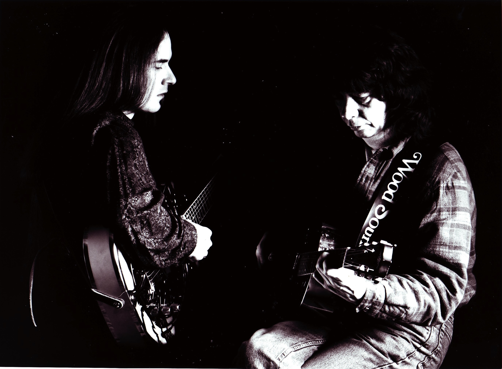
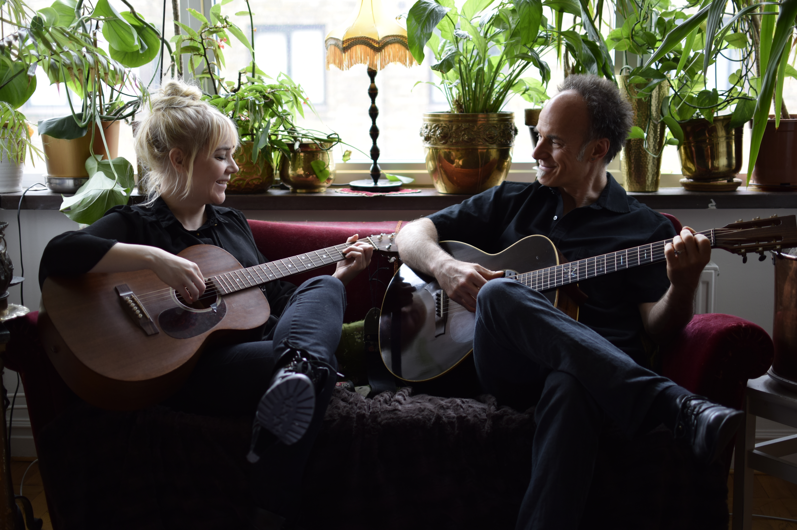
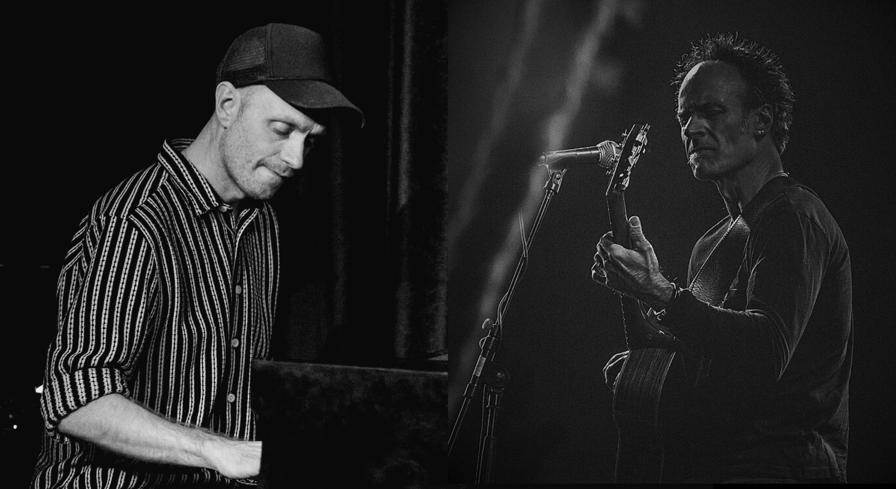

Four Constellations

Blues Trio
My longest and most significant collaboration. Pera Joe and I have been playing together since 1983 — widely regarded as the first professional acoustic blues act in Eastern Europe.
Read the Story →
Sam Mitchell
A five-year duo with one of my early guitar heroes. Sam Mitchell and I released "Two Long From Home" and toured Scandinavia. Sam passed away in 2006.
Read the Story →
Delmore Sessions
An acoustic duo with singer and guitarist Maria Stille. Rooted in the Delmore Brothers songbook — hillbilly, country, blues and early jazz. Available as a one or two hour show for festivals and associations.
Read the Story →
Prohibition Jazz & Blues
The virtuoso pianist Sven Erik Lundeqvist, jazz singer Rebecca Bergcrantz and myself. Music from the American Prohibition era 1920–1933. Stories you might just not be able to find online…
Read the Story →